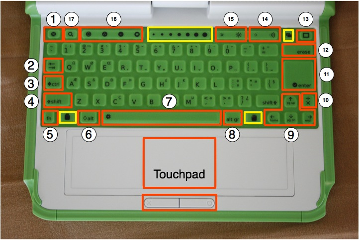

Keyboard¶
The Keyboard and Touchpad¶

TODO: <We should have a picture of 1.5 rather than 1.0>
The keyboard and touchpad—which are dust and water resistant—have special keys for additional functionality. Keyboards are designed for each country, so your keyboard may not look exactly like the one in this figure. Keys outlined in yellow are reserved for future features (such as the “grab” keys and the “slider bar”).
Escape key – The escape key is labeled with an × symbol on a black circle. The escape key is most commonly used in combination with the control key to quit activities (ctrl + esc).
Tab key – The tab key is labeled with arrows pointing right and left. The tab key—in addition to its standard use—is used in combination with the control, shift and alt keys to cycle through open Activities. For example, alt + tab cycles forward through running Activities.
Control key – The control key is used in combination with other keys to issue commands. For example, ctrl + c is used to copy to the clipboard; ctrl + v is used to paste from the clipboard.
Shift key – The shift key is used in combination with other keys as a modifier, most commonly to shift between lowercase and uppercase in Latin-based alphabets.
Fn key – The function key is used in combination with other keys as a modifier. For example, fn + erase is delete; fn + up arrow is page up.
Alt key – The alt key is used in combination with other keys to issue commands. For example, alt + enter toggles full-screen mode; alt + spacebar toggles the tray visibility. This example works in the Browse Activity but not in the Record Activity.
Spacebar – The spacebar key types a space. In the future, when used in conjunction with the function key (fn), it will eventually view the source code for the currently running Activity.
Alt Gr key – The alt graphics key is used in combination with other keys as a modifier, most commonly to select an alternative letter or generate an accented character. The details of this functionality vary from keyboard layout to keyboard layout: for example, on the US keyboard, alt gr + j generates a € (euro sign); typing the character “a” followed by alt gr + 4 generates á.
Arrow keys – The arrow keys are used for navigation; combined with the function key (fn), they are used for page up, page down, home, and end.
Language key – The language key is found on keyboard layouts that combine Latin and non-Latin scripts. It toggles between scripts, so, for example, one can switch between typing in English and Hindi with a single keystroke. (On Latin-only keyboards, the language key has been replaced by a × and ÷ key.)
Enter key – The enter key—in addition to its standard use—is used in combination with modifier keys. For example, alt + enter toggles full-screen mode.
Erase key – The erase key deletes the character behind the cursor (backspace). fn + erase deletes the key in front of (or on) the cursor.
Frame key – The Frame key toggles the presence of the Frame on the screen. The Frame is the black border around the screen that holds the Activity taskbar, clipboard, wireless connections, battery level, and so on.
Volume controls – The volume keys lower and raise the audio level.
Brightness controls – The brightness keys lower and raise the brightness of the screen backlight. To turn the backlight off completely may take 7-8 button presses.
View keys – The four view keys, from left to right, take you to the Neighborhood view, the Group view, the Home view, and the Activity view.
Search key – The search key takes you directly to the Journal and places the text cursor in the search box.